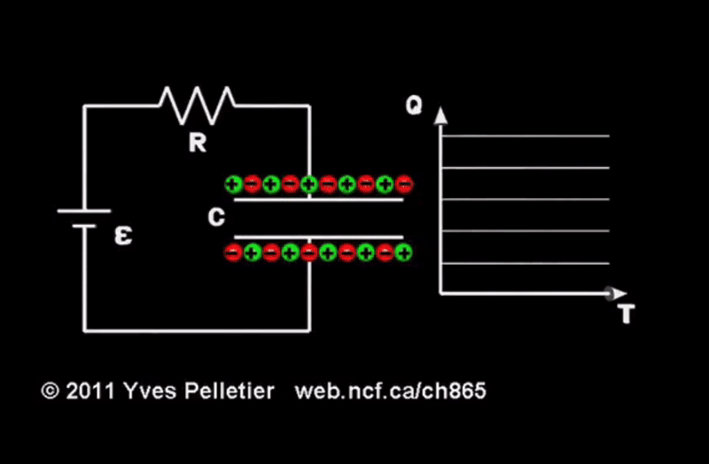

Lecture 10: Charging and Discharging Capacitors#
Learning Objectives#
By the end of this lecture you should:
Be able to sketch the behaviour of current, voltage and charge when charging or discharging capacitors.
Know and be able to use the equations for current, charge and voltage when charging or discharging capacitors.
Capacitor Charging Plots#
When an initially uncharged capacitor is connected to a source of EMF such as a battery, the electrons at the negative terminal of the battery will be repelled away and accumulate the plate of the capacitor connected to it. Electrons on the other capacitor plate will also be attracted to the positive terminal of the battery and repelled from the opposing negatively charged plate, this in turn leaves the second capacitor plate with an overall positive charge.
As the charge accumulates on the capacitor plates, an increasingly strong electric field that opposes the one produced by the battery is established. Charges will continue to move round the circuit until the electric field established between through the circuit due to the potential difference of the capacitor plates is equal to that produced by the battery. At this point the net electric field is zero and charges will no longer move around the circuit. The capacitor has become fully charged. If an alternative pathway in the circuit is activiated (e.g. by closing a switch), the capacitor will discharge.
Now let’s consider how the current, potential difference, and charge change as a function of time as a capacitor charges.
Charge#
Initially, when the capacitor is uncharged, it is very easy for electrons to move around the circuit. However, as more and more negative charge accumulates on one of the capacitor plates, the coulomb repulsion between the electrons becomes greater and greater. This means that as time progresses, the charge accumulating on the capacitor will increase, but at a decreasing rate as it becomes increasingly difficult for charge to move around the circuit. This is shown graphically as:

This behaviour can also be represented graphically showing the capacitor charge as a function of time:

Current#
As discussed above, as the capacitor charges, it becomes more and more difficult for charge to move around the circuit. This means that the rate at which charge moves round the circuit, the current, decreases as a function of time. This is shown graphically as:
Voltage#
As the charge accumulates on the capacitor plates, the potential difference across the capacitor increases until it reaches the source voltage. This behaviour is to be expected as it was established in the last lecture that the charge and voltage are directly proportional to one another, the the constant of proportionality being equal to the capacitance \(Q = CV \). Accordingly, the plot of voltage across the capacitor as a function of time is simply a scaled verion of the plot of charge against time as shown below.
Capacitor Discharging Plots#
A switch that allows connects the capacitor to either the EMF source or another portion of a circuit allows us to swap between charging and discharging. When the switch is set so that the capacitor is connected to the source of EMF, the capacitor will charge. When the switch is set so that the capacitor is connected to another circuit without an EMF source, the capacitor will discharge. Similar trends in the charge, current and voltage are observed when discharging the capacitor.
Charge#
A fully charged capacitor has a high electron density on one capacitor plate. This means that when discharging, initially the electrons at the negative capacitor plate will experience a strong coulomb repulsion and be easily repelled from the capacitor plate. As time progresses, the electric field that is accelerating the electrons becomes weaker and weaker until there is no net electric field and both capacitor plates are neutrally charged. As such, the rate at which the capacitor plate becomes depleted of charge decreases as a function of time. This is shown in the plot below:
Current#
As was the case for charging, as the charge of the capacitor plates reduces, so to does the electric field between them, meaning the rate at which charge moves throughout the circuit reduces. Therefore the current reduces as a function of time and at a decreasing rate.
Note the negative y-axis here. The current is in the opposite direction now!
Voltage#
Once again, the voltage plot mirrors that of the charge plot, and therefore we see that the voltage decreases as a function of time at a decreasing rate:
The Time Constant#
You will have noticed that the plots above show exponential functions, more specifically exponential relationships that are functions of time. To be able to perform meaningful calculations we must introduce a new concept - the time constant, \(\tau\).
When discharging a capacitor, the time constant is defined as the amount of time it takes for the charge, voltage or current to fall to \(e^{-1}\) ~37% of the inital value. The time constant is therefore how long it takes for any exponential to get to ~37% of its original value.
The larger the time constant, the longer it will take for the exponential function to decay. The time constant has units of time e.g. seconds.
For an RC circuit (one made of a resistor and a capacitor), \(\tau = RC\), because the charge discharge time will depend on how much charge the capacitor is capable of holding and how much the resistor impedes the flow of charge.
How many time constants does it take for a capacitor to become fully charged or discharged? Well as an exponential never actually reaches zero (it just gets closer and closer), we take a sensible approach and say that that it is \(5\) time constants, as after this amount of time in the case of discharging, only approximately 0.69% of the intial charge, current or voltage will remain - this is good enough…
It is important that you do not confuse the time constant with half- life. The half-life is defined as the time it takes for either the charge, current or voltage to fall to 50% of its original value and is represented by the symbol \(t_{1/2}\). The principle of half-life is shown on the plot below:
Important
The time constant is the time it takes for an exponential to fall to ~37% of its original value. The time constant of a capacitor is calculated as:
\(\tau = RC.\)
The half-life is the time it takes for an exponential to fall to half of its initial value. We therefore expect the time constant to be greater than the half-life.
Ensure that you understand these concepts - these are relevent to all exponential functions including radioactive decay (where we will revisit these ideas in semester 2!).
Charging and Discharging Equations#
With an understanding of the behaviour of exponential functions, we are able to determine the amount of charge held by the capacitor, the magnitude of the charging/discharging current, or voltage across the capacitor at any given time using the following equations. These are key equations. Ensure that you commit them to memory.
Charging Discharging Equations
Charging:
\( Q = Q_{max} \left( 1 - e^{-t/RC} \right) = Q_{max} \left( 1 - e^{-t/\tau} \right), \)
where \(Q\) is the charge, \(Q_{max}\) is the maximum amount of charge the capacitor can hold, \(t\) is the time, \(R\) is the resistance, \(C\) is the capacitance and \(\tau\) is the time constant.
\( I = I_0 e^{-t/RC} = I_0 e^{-t/\tau}, \)
where \(I\) is the current and \(I_0\) is the initial current.
\( V = V_0 \left( 1 - e^{-t/RC} \right) = V_0 \left( 1 - e^{-t/\tau} \right), \)
where \(V\) is the voltage and \(V_0\) is the EMF, \(\epsilon\) supplied by the battery (i.e. the voltage the capacitor will charge to). Often to avoid confusion, this equation is written as:
\( V = \epsilon \left( 1 - e^{-t/RC} \right) = \epsilon \left( 1 - e^{-t/\tau} \right). \)
Discharging
\( Q = Q_0 e^{-t/RC} = Q_{0} e^{-t/\tau}, \)
\( I = I_0 e^{-t/RC} = I_{0} e^{-t/\tau}, \)
\( V = V_0 e^{-t/RC} = V_{0} e^{-t/\tau}, \)
where the subscript zero, simply means the initial value of charge, current or voltage at the instant it begins discharging.
Energy Stored by a Capacitor#
The work done to charge a capacitor is given by:
\(W = \frac{1}{2}QV, \)
recalling that \( Q = CV\), the work done can also be expressed as:
\( W = \frac{1}{2}QV = \frac{1}{2}CV^2 = \frac{Q^2}{2C}. \)
This tells us how much energy is stored by a capacitor if we start with zero voltage:
\( E = \frac{1}{2}QV = \frac{1}{2}CV^2 = \frac{Q^2}{2C}. \)
Questions#
Warning
Atempt the questions before looking at the solutions otherwise you will not learn!
Students who look at mark schemes without going through the motions of a question often think “yes, that’s what I would have done”, but are then unable to perfom on exams as the knowledge was never consolidated through practise.
Note
Units have been omitted in calculations below for simplicity. Ensure you know what each value represents.
Question 1#
a. Sketch the plots of charge, current and voltage for a capacitor as it charges and discharges.
b. What are the capacitor charge and discharging equations?
Q1a Solution

Q1b Solution
Charging:
\( Q = Q_{max} \left( 1 - e^{-t/RC} \right) = Q_{max} \left( 1 - e^{-t/\tau} \right), \)
\( I = I_0 e^{-t/RC} = I_0 e^{-t/\tau}, \)
\( V = \epsilon \left( 1 - e^{-t/RC} \right) = \epsilon \left( 1 - e^{-t/\tau} \right). \)
Discharging:
\( Q = Q_0 e^{-t/RC} = Q_{0} e^{-t/\tau}, \)
\( I = I_0 e^{-t/RC} = I_{0} e^{-t/\tau}, \)
\( V = V_0 e^{-t/RC} = V_{0} e^{-t/\tau}. \)
Question 2#
A 1100μF capacitor is connected to a 8.0 V battery with a internal resistance of 6.0 kΩ.
a. Calculate the initial charge and the maximum charge on the capacitor.
b. Calculate the time it takes to fully charge the capacitor.
c. After \(10\,\)s of charging, what is the voltage across the capacitor?
d. What is the voltage across the RESISTOR after \(10\,\)s?
e. What is the maximum energy that the capacitor can hold?
Q2a Solution
The capacitor is initially uncharged so:
\( Q_0 = 0\, C\)
and
\( Q_{max} = CV_{max}, \)
\( Q_{max} = 1100 \times 10^{-6} \cdot 8, \)
\( Q_{max} = 8.8 \, mC.\)
Q2b Solution
The time taken for the capacitor to full charge or discharge is approximated as 5 time constants worth of time:
\( t = 5\tau = 5RC \)
\( t = 5 \cdot 6000 \cdot 1100 \times 10^{-6} \)
\( t = 33 \, s. \)
Q2c Solution
We can determine the voltage across the capacitor after \(10\,\)s of charging using the correct capacitor charging equation:
\( V = \epsilon \left( 1 - e^{-t/RC} \right) \)
\( V = 8 \left( 1 - e^{\frac{-10}{ 6000 \cdot 1100 \times 10^{-6}}} \right) \)
\( V = 6.2 \, V\)
Q2d Solution
To determine the voltage across the resistor we can determine the current flowing \(10\,\)s after the capacitor began to charge and then use Ohm’s law. The initial current is given as the maximum current that can flow around the circuit, which itself can be calculated using Ohm’s law:
\( I_0 = \frac{V}{R} \)
\( I = I_0 e^{-t/RC} \to I = \frac{V}{R} e^{-t/RC} \)
\( I = \frac{8}{6000} e^{\frac{-10}{ 6000 \cdot 1100 \times 10^{-6}}} \)
\( I = 0.29 \, A\)
Therefore, the voltagw across the resistor is given as:
\( V = IR \)
\( V = 0.29 \times 6000 \)
\( V = 1740 \, V\)
The voltage across the resistor \(10\)s after the capacitor began charging is \(1700\, V\) to two significant figures.
Q2e Solution
To determine the amount of energy that the capacitor can store, we simply use the appropriate equation:
\( E \frac{1}{2}CV^2 \)
\( E = \frac{1}{2}\cdot 1100 \times 10^{-6} \cdot 8^2 \)
\( E = 0.035 \, J \)
\( E = 35 \, mJ \)
Question 3#
A \(100 \,\mu F\) capacitor is fully charged and holds \(10.0\,mC\) of charge. It is then discharged through two resistors arranged in series. The resistors have resistances of \(2.00 \,M\Omega\) and \(3.00\, M\Omega\).
a) Calculate the amount of charge remaining on the capacitor after \(50\,s\).
b) Calculate the time for the potential difference to drop to \(12 \,V\).
c) Find the voltage drop across the \(3\,M\Omega\) resistor after \(100\,s\).
Q3a Solution
The first thing to do is to calculate the total equivalent resistance of the circuit that the capacitor will discharge through. As the resistors are arranged in series:
\(R_{total} = R_1 + R_2, \)
\( R_{total} = 2 \times 10^6 + 3 \times 10^6 \)
\( R_{total} = 5\times 10^6 \, \Omega.\)
Now the capacitor discharge equation for charge can be used:
\( Q = Q_0 e^{-t/RC} \)
\( Q = 10 \times 10^{-3} \cdot e^{\frac{-50}{5\times 10^6 \cdot 100 \times 10^{-6}}} \)
\( Q = 9.05 \times 10^{-3} \, C = 9.05 \, mC.\)
Q3b Solution
To determine the time it takes for the voltage to below a given threshold, the voltage discharge equation will be used. This means that the initial voltage needs to be calculated from the capacitance and charge:
\(V_0 = \frac{Q_0}{C}\)
\(V_0 = \frac{10 \times 10^{-3}}{100 \times 10^{-6}}\)
\(V_0 = 100\, V\)
Now the voltage discharge equation can be rearranged for \(t\):
\( V = V_0 e^{-t/RC} \)
\( \frac{V}{V_0} = e^{-t/RC} \)
To get rid of an exponenital, take the natural log:
\( ln{\frac{V}{V_0}} = - \frac{t}{RC} \)
\( t = -RC \cdot \ln{\frac{V}{V_0}} \)
\( t = - 5\times 10^6 \cdot 100 \times 10^{-6} \cdot \ln{\frac{12}{100}} \)
\( t = 1060 \,s \)
Q3c Solution
The resistors are arranged in series meaning that if the current flowing through the circuit at a given time is found, this same current must be flowing through each of the resistors. Ohm’s law can then therefore be used to determine the voltage drop across the resistors. As was the case with the voltage, we must first find the initial current:
\( I_0 = \frac{V_0}{R} \)
\( I_0 = \frac{100}{5\times 10^6} \)
\( I_0 = 20 \times 10^{-3}\, A \)
Now we can use the capacitor discharge equation for current to determine what the current is after \(100\,s\) of discharging:
\( I = I_0 e^{-t/RC} \)
\( I = 20 \times 10^{-3} e^{\frac{-100}{5\times 10^6 \cdot 100 \times 10^{-6}}} \)
\( I = 16.4 \, \mu A. \)
Therefore the voltage drop across the resistor is:
\( V = IR \)
\( V = 16.4 \times 10^{-6} \cdot 3 \times 10^{6}\)
\( V = 49.2 \, V.\)